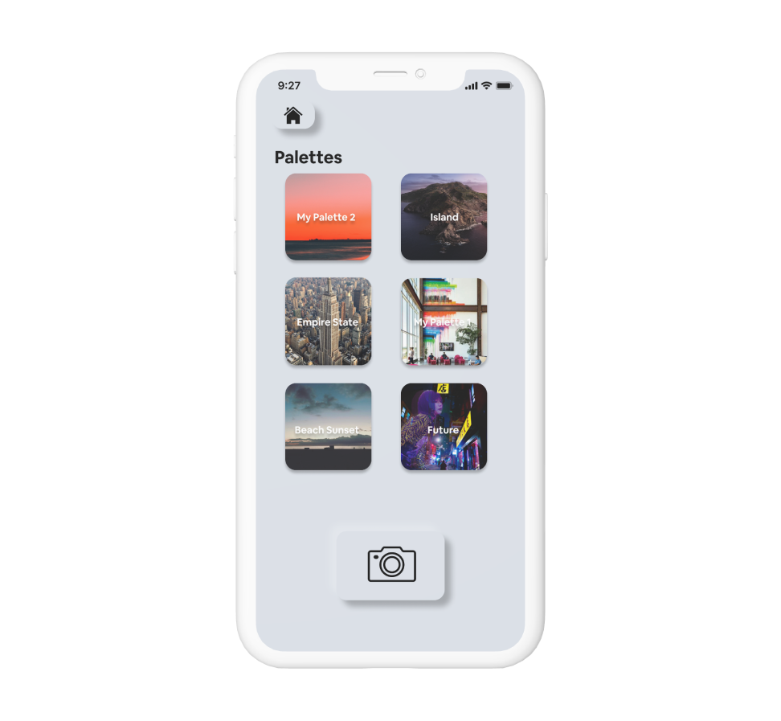

03
Hexed+
Mobile hex code finder
2019
Deliverables
- Figma
- Interface Design
- UX Design
- UX Research
Hexed is a mobile application that is meant to find Hex Code values
The user is able to take a picture and grab colors from it. Once the user grabs colors, they will be able to see the hex code and send it to their email address in order to utilize it in a CSS or Adobe Suite file. The user can also create palettes based on images and additionally add or subtract colors. They are also able to create Linear, Radial, Angular, or Diamond gradients from palettes. The focus for this app was placed on a minimal number of unctions that would be executed seamlessly in a visually satisfying and appealing way.
The research process for Hexed began with peforming a task analyais of competitive applications focused on color for designers and artists. Once we solidified the idea for our app and narrowed down our focus, we held 1:1, 15 minute interviews with 5 creatives. The goal of these interviews was to understand what they believed would be beneficial to an app surounding Hex Codes as well as their personal process and struggles with implementing colors in their work. We compiled a list of 10 questions that we used as the framework for our interviews.

Designing Hexed was one of the first experiences I have had with designing an application till the prototyping phase. I enjoyed the process of iterating this app as well as creating a professional visual style and brand. I hope to iterate further and push this into the development phase. One of the biggest challenges with designing Hexed was creating the dark mode frames. It was not a challenge I anticipated with realized shortly after the importance of choosing the right colors to display for an optimal user experience.